cloud/ folder, how the pieces connect, and the full path from a sensor on a board
to a browser, and from a signed firmware file back to the board.What it does. Two small boards measure the environment: temperature, humidity and pressure (the Gateway also measures motion and magnetic field). The Field Device is a board with a touch display; the Gateway asks it for its values over a cable (RS-485, using the Modbus protocol, an old and simple industrial request/answer protocol), adds its own, and sends everything over Wi-Fi to a cloud. The cloud stores the data, draws it in a web page, lets an operator send commands back, pushes alerts to a phone, and can update the Gateway's firmware over the air (OTA) without a cable.
What "the cloud" is here. Normally "the cloud" means renting services from a company such as Amazon (AWS). This project
builds the same services itself, small enough to run on one Raspberry Pi 3B (1 GB of memory) in the house. The
cloud/ folder holds the program that does the work and the web page it serves. Every piece is modelled on a named AWS
service, so what you learn here carries over to a real AWS system.
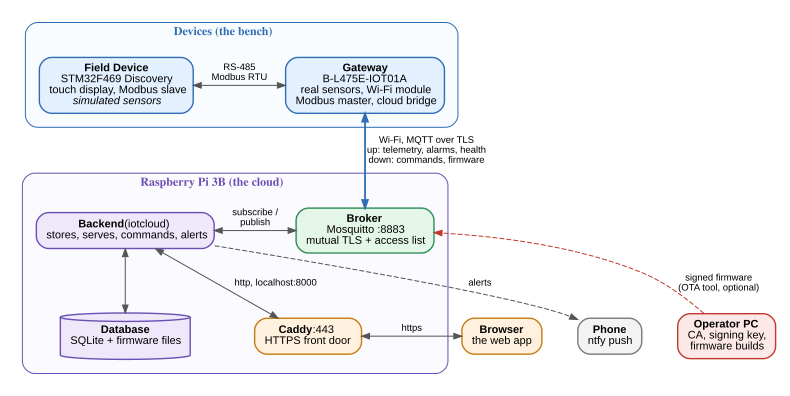
| Piece | Where / how |
|---|---|
| Cloud | Raspberry Pi 3B, host name rpi-byte, address 192.168.0.209, reached as https://envmon.lan/ (the name is added to the PC's /etc/hosts) |
| Broker | Mosquitto on the same Pi, port 8883, own certificate authority, access list on |
| Backend | systemd service iotcloud on 127.0.0.1:8000, behind Caddy on port 443 |
| Gateway | serial number 002d004f3442501020323848, firmware 1.0.1 (signed, from OTA) |
| Operator PC | holds the certificate authority key, the firmware signing key, and the build tools |
| Word | Plain meaning |
|---|---|
| MQTT | A small messaging protocol for devices. Nobody talks to anybody directly: everyone talks to a middleman and drops messages under a topic (a path such as dt/iotmonitor/<serial>/telemetry). Whoever subscribed to that topic receives them. |
| Broker | The middleman of MQTT. Here: Mosquitto. It only forwards; it keeps no history and understands no message. |
| Topic | The "address" of a message. dt/… ("data") topics go device→cloud, cmd/… topics go cloud→device. |
| QoS | "Quality of service": how hard MQTT tries. 0 = send once, may be lost (fine for a reading every minute). 1 = keep trying until acknowledged, may arrive twice (used for alarms, commands, results). |
| TLS | The encryption you know from https://. It also proves who you are talking to, using certificates. |
| Certificate / CA | A certificate is a signed ID card: "this public key belongs to iotcloud". A Certificate Authority (CA) is the signer. Anyone who trusts the CA trusts everything it signed. The matching private key never leaves its owner. |
| Mutual TLS | Both sides show a certificate: the device checks the broker and the broker checks the device. No password exists; the certificate is the identity. |
| REST API | The web page and the backend talk with ordinary web requests (GET /api/devices, POST …/control) carrying JSON text. |
| SSE | "Server-sent events": the browser keeps one connection open and the backend pushes a line whenever something happens. That is how numbers change on screen without reloading. |
| OTA | "Over the air": updating the firmware of the board through the network. The risky part is a bad update, so it needs a signature check and an automatic way back (chapter 10). |
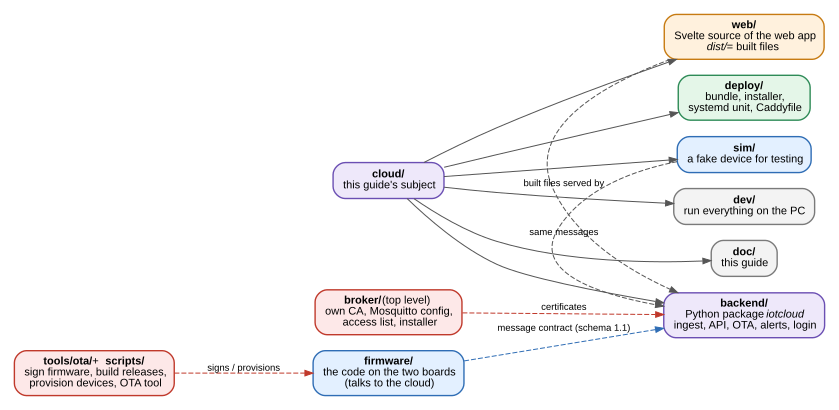
cloud/ folder (purple) and the neighbours it depends on. Dashed lines are "uses" or "talks to".| Path | What it contains | AWS counterpart |
|---|---|---|
cloud/backend/ | The Python program iotcloud: receives every device message, stores it, serves the API, runs commands, OTA and alerts. 12 modules, about 1,400 lines, plus 6 test files. | Lambda, API Gateway, rules engine |
cloud/web/ | The web app, written in Svelte. src/ is the source; dist/ is the built page the backend serves. Built in a container, so Node is not needed on the PC. | Amplify / CloudFront |
cloud/deploy/ | Everything to put it on the Pi: a bundle builder, an installer, the systemd unit, the Caddy HTTPS configuration, the settings template, an installer test that runs in a Debian container. | CloudFormation |
cloud/sim/ | device_sim.py: a fake Gateway that speaks the same messages. Lets the cloud be developed and tested without the boards. | IoT Device Simulator |
cloud/dev/ | run-local.sh starts a broker, the backend and the simulator on the PC in one command; test-alerts.sh checks the alert chain. | - |
cloud/doc/ | This guide (the PDF and the scripts that rebuild it). | - |
cloud/README.md, DECISIONS.md | The short README and the 16 design decisions with their reasons. | - |
broker/ (top level) | The system's own certificate authority (iotpki.py), the Mosquitto configuration with the access list, and the installer for the Pi's broker. | IoT Core policies, Private CA |
tools/ota/, scripts/ | Firmware signing (make_image.py), release building (build-release.sh), device provisioning (provision_device.py), and the command-line OTA tool (ota_server.py). | Code signing |
firmware/ | The code on the two boards. The cloud and the firmware share one contract, the message formats, which is why they live in the same repository. | - |
DECISIONS.md: building each service by hand makes every step visible and breakable on purpose, and costs nothing to run.
A bridge to a real AWS account stays possible, because the messages follow the AWS IoT conventions.Follow one temperature reading. The numbered steps match the sequence diagram on the next page.
dt/iotmonitor/<serial>/telemetry. Temperature is sent as tenths of a degree (231 means 23.1 °C) because the firmware avoids
floating point.ingest.py) checks the topic, parses the JSON, decides the time to store (the device's clock if it says it is
synchronised with the network time, otherwise the arrival time), and writes a row to the database.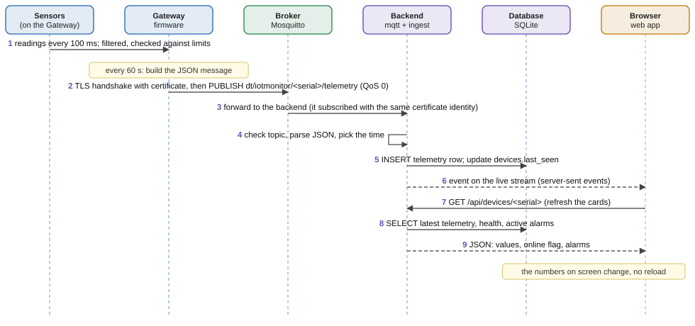
Dashed arrows are replies or pushes. Message 6 is the live stream: the backend does not send the data itself, only a nudge; the page then asks for what it needs.
Mosquitto is a ready-made open-source MQTT broker. The project adds three things around it, all in broker/:
iotpki.py). It creates the CA, then signs certificates for the broker, for the backend (iotcloud),
for the OTA tool (ota-operator) and for each device. A device's certificate is named by its serial number (24 hex characters, the processor's unique ID), which is also its MQTT client id.
It can revoke a certificate (a revocation list the broker reads). Everything lives in ~/.iot-pki; the CA key is encrypted with a passphrase.acl.conf) saying which name may publish and read which topics:
| Name | May publish | May read |
|---|---|---|
| a device (its serial) | dt/iotmonitor/<its own serial>/# | cmd/iotmonitor/<its own serial>/# |
iotcloud (backend) | cmd/iotmonitor/+/# | dt/iotmonitor/+/# |
ota-operator | the OTA command and data topics | OTA requests and results |
A Python program using FastAPI (web framework), uvicorn (web server) and paho-mqtt (MQTT client). It does five jobs, one or two modules each:
| Module | Job |
|---|---|
mqtt.py | Connects to the broker with its certificate and a persistent session (messages sent while the backend restarts wait in the broker). Subscribes to every device topic and hands each message to ingest. One bad message is logged and skipped; it never stops the stream. |
ingest.py | The "rules engine": topic → table. Pure functions that need no broker, so they are easy to test. |
db.py | SQLite storage: one connection protected by a lock, because the MQTT thread writes while web threads read. |
api.py | All the web endpoints under /api, the login guard, and the static web app at /. |
live.py | The "hub" that fans each new event out to every open browser stream. |
commands.py | Sends configuration and control commands and tracks their answers (5.5). |
ota.py | Firmware file store, update jobs and the chunk server (5.6). |
auth.py, admin.py | Users, passwords, sessions; and the command-line tool that creates users (5.7). |
notify.py | Alerts to phone, e-mail or another system (5.8). |
config.py | Settings, read from environment variables (Appendix A). |
SQLite is a database that is just one file, with no server to run: right for a Pi with 1 GB of memory. It uses write-ahead logging, so reading does not block writing.
The file is /var/lib/iotcloud/iotcloud.sqlite3. Time columns are Unix seconds (ts = the message's time, recv_ts = when it arrived).
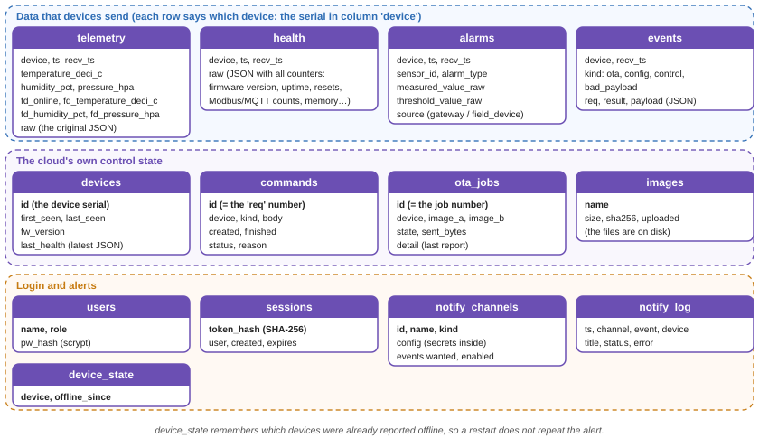
When mqtt.py stores a message it also hands a small event ({device, kind, time}) to the hub. Each browser holds one open request to /api/stream; the hub
pushes the event as a line of text. A slow browser loses its oldest events instead of making the server grow (each queue holds 200). A keep-alive line every 15 s stops proxies closing the connection.
A device going offline sends no message, so the web page also refreshes every 15 s.
An admin can send a control command (read, restart, restart_confirm, reset_metrics) or a config change (up to 8 numeric settings, for example a new alarm limit).
The cloud writes a row (pending), numbers it, and publishes it with that number as req. The device does the work and answers with the same req; the cloud updates the row to
applied, accepted or rejected with a reason. No answer in 60 s shows as timeout, but a command sent to an offline device is still delivered later (QoS 1), and the row then moves to the real result.
Whether a value is acceptable is the device's decision; the cloud checks only the shape.
The cloud's side of a firmware update (chapter 10 explains the device's side). It has three parts: a firmware store (uploaded files kept under /var/lib/iotcloud/images, with a SHA-256 fingerprint in the images table),
jobs (one row per update of one device: sent → running → success / failed / rolled_back / rejected, or cancelled / expired) and a chunk server. The device pulls the file: it asks "give me 1024 bytes from offset N of slot B", and the backend answers with exactly those bytes.
Pulling means the device sets the pace, can resume after an interruption, and the cloud holds no per-device connection.
iotcloud-admin add-user NAME --role admin|viewer. There is no sign-up and no "forgot password" over the web, so nothing there can be attacked.Origin header), on top of the cookie rule.An alert channel is a destination: ntfy (push to the phone app), a webhook (an HTTP POST signed with a shared secret) or e-mail. Each channel lists the events it wants: alarm raised, alarm cleared, device offline, device back, OTA result. Sending happens on a separate worker thread with three tries (so a slow mail server cannot delay the next reading), and a channel is cut off after 20 messages in a minute so a fault storm cannot flood a phone. "Device offline" has no message to react to, so a watcher thread compares each device's last message with the 150-second online window and tells once when it goes quiet and once when it returns; the state is stored, so a restart does not repeat it. Secrets (tokens, passwords) are kept in the database and never shown again by the API. Every attempt is recorded in a log page ("What was sent").
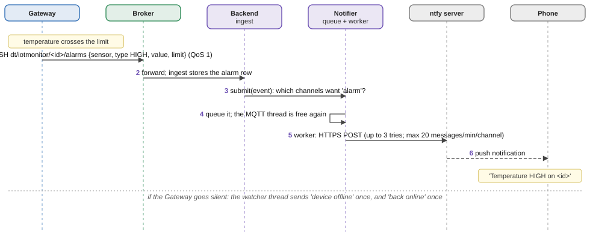
A single-page app written in Svelte 5 and built by Vite into plain files. The backend serves those files at /; there is no separate web server for the app. Chapter 6 describes its structure.
The device page has six tabs: Overview (latest values, active alarms, health counters), Charts (both boards on the same axes), Alarms, Commands, Firmware (upload, start an update, progress bar) and Downloads (CSV or JSON of readings, health, alarms or events). A separate Alerts page manages channels.
127.0.0.1:8000. For the name envmon.lan (which no public authority could certify) it acts as its own small CA; each browser imports Caddy's root certificate once. It also adds security headers and does not buffer the live stream.iotcloud, restarts it on failure, makes the system read-only to it except /var/lib/iotcloud, and stops it within 5 seconds (--timeout-graceful-shutdown 5, so open live streams do not delay a restart).build-bundle.sh packs backend, web app, unit, Caddyfile and installer into one tarball; install.sh on the Pi installs or upgrades (data, users and settings stay) and creates the iotcloud-admin helper.cgroup_disable=memory, so the unit's 300 MB limit is not enforced (the service uses about 60 MB). Noted, not changed.sim/device_sim.py publishes telemetry, health and alarms in the firmware's schema, answers commands, and even performs a fake OTA (--ota-fail makes it fail). dev/run-local.sh --sim starts a plain broker in Docker, the backend (login off, localhost only) and the simulator, so the whole web app can be tried on the PC at http://127.0.0.1:8000.
The simulator never replaces a test with the real device; it exists so cloud work does not wait for the boards.
Two programs, one contract. The back end runs on the Pi and owns all data. The front end is a web page that runs in the browser and owns nothing: it shows what the back end says and asks it to do things. The next two pages draw them; this page explains the reasoning.
db.py keeps them from colliding (Figure 5).ingest.handle. One place decides what a message means, which makes it testable without a broker (47 tests, no network needed).curl command and a script all use the same endpoints with the same login rules. With login off (development only), http://127.0.0.1:8000/docs lists every endpoint.web/build.sh (Vite, run in a node:20-alpine container) the result is web/dist/: one HTML page, one script, one stylesheet. The backend serves them; the Pi needs no Node (Figure 6).auth.svelte.js holds who is signed in; live.svelte.js holds one EventSource connection (opened only while signed in) and a counter that goes up on every event. Screens watch the counter and reload what they show: that one idea replaces polling. Each screen fetches through api.js, a thin wrapper over fetch that turns a 401 into "back to the login screen".https://envmon.lan/#002d004f3442501020323848/Firmware opens that device on that tab.Chart.svelte draws plain SVG lines, which keeps the download small for a Pi.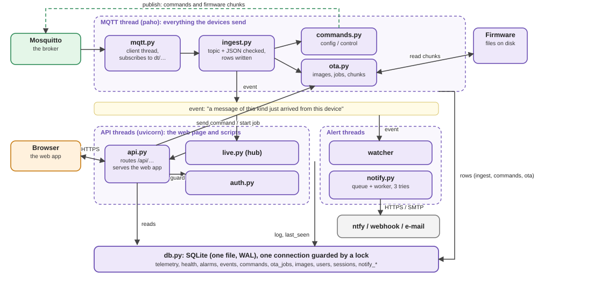
Purple boxes are the backend's modules; green is the broker; orange is the browser. Dashed arrows publish to the broker. The "event" arrows are what feeds the live stream and the alerts.
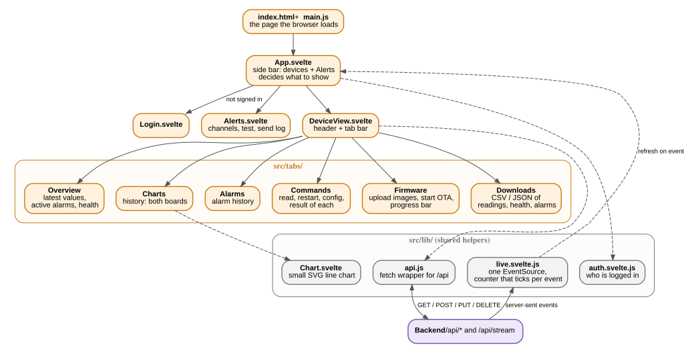
Orange boxes are screens (src/ and src/tabs/); grey boxes are shared helpers (src/lib/). Everything talks to the backend through /api/* and the live stream.
All messages are JSON text, except the OTA data chunks. Each carries schema_version ("1.1"), device_id, timestamp and sync_state ("synchronised" or "unsynchronised"). The topic root is iotmonitor. The formats are defined by the firmware (firmware/gateway/application/cloud_publisher/) and the OTA wire contract by docs/lld/application/update-service-lld.md §6; a change on one side must be matched on the other, which is the main reason both live in one repository.
| Topic | QoS | Direction and meaning |
|---|---|---|
dt/iotmonitor/<id>/telemetry | 0 | device → cloud, every 60 s: sensor values of both boards |
dt/iotmonitor/<id>/health | 0 | device → cloud, every 5 min: firmware version, uptime, reset cause, Modbus and MQTT counters, Wi-Fi signal, free memory, stack margins |
dt/iotmonitor/<id>/alarms | 1 | device → cloud, on change: alarm raised (HIGH/LOW) or CLEAR, with value and limit |
cmd/iotmonitor/<id>/config | 1 | cloud → device: {"temp_alarm_high":3000,"req":5} |
cmd/iotmonitor/<id>/control | 1 | cloud → device: {"command":"read","req":7} |
dt/iotmonitor/<id>/config/result, control/result | 1 | device → cloud: the answer, echoing req |
cmd/iotmonitor/<id>/ota | 1 | cloud → device: start an update {"job":42,"size_a":N,"size_b":N} |
dt/iotmonitor/<id>/ota/request | 0 | device → cloud: one per chunk {"job":42,"slot":"B","offset":4096,"len":1024} |
cmd/iotmonitor/<id>/ota/data | 0 | cloud → device, binary: job (4 bytes) + offset (4 bytes) + up to 1024 bytes of the file |
dt/iotmonitor/<id>/ota/result | 1 | device → cloud: accepted, rejected, failed, success, rolled_back (+ reason, version, rollback count) |
{ "schema_version": "1.1", "device_id": "002d004f3442501020323848",
"timestamp": 1794257541, "sync_state": "synchronised",
"temperature_deci_c": 256, "humidity_pct": 38, "pressure_hpa": 1010,
"accel_x_mg": ..., "gyro_x_mdps": ..., "mag_x_mgauss": ...,
"field_device": { "online": true, "temperature_deci_c": 220, "humidity_pct": 41, "pressure_hpa": 1014 } }Units are integers on purpose: tenths of °C, percent, hectopascal, milli-g, milli-degrees per second, milligauss.
{ "schema_version": "1.1", "device_id": "...", "timestamp": ..., "sync_state": "synchronised",
"sensor_id": "temperature", "alarm_type": "HIGH", "measured_value_raw": 3120,
"threshold_value_raw": 3000, "source": "gateway" } // source is "field_device" for the other boardAlarm values keep each sensor's own fixed-point scale: temperature in hundredths of °C (3120 = 31.20 °C), humidity in hundredths of % and pressure in tenths of hPa (9552 = 955.2 hPa). The sensors are named temperature, humidity and pressure; the type is HIGH, LOW or CLEAR.
Three separate questions are answered by three separate mechanisms. Keeping them apart is the point.
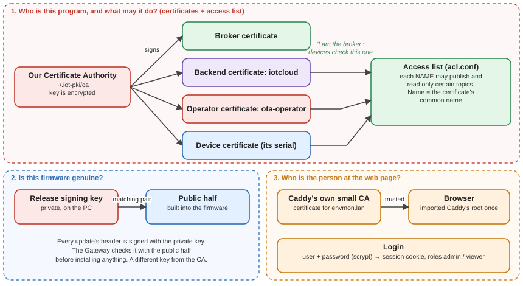
| Question | Answer |
|---|---|
| Who is this device / program? | The certificate it shows to the broker, signed by our CA. The broker refuses anyone without one (no anonymous clients). Each device's name is its serial. |
| What may it do? | The access list, keyed by the certificate's name. A device can only write under its own serial and read only its own commands. A device cannot send commands, and cannot read another device's commands. |
| Is the firmware genuine? | The release signing key (ECDSA P-256) signs each image; the matching public key is built into the Gateway firmware and checks the signature before any update is installed. This is a different key from the CA key. A forged update command at worst starts a download that ends in sig_invalid. |
| Who is the person at the web page? | The login (5.7). Separate from every certificate above. |
| Is the web page the real one? | Caddy's certificate for envmon.lan, trusted because the browser imported Caddy's root once. |
| Can a lost device be shut out? | iotpki.py revoke <serial> and refresh the revocation list on the broker. |
| Key | Where | If lost |
|---|---|---|
| CA private key | ~/.iot-pki/ca/ca.key on the PC, encrypted with a passphrase. Never copied to the Pi. | No new certificates can be issued; make a new CA and re-provision every device. |
| Device private key | In the Gateway's flash (CertStore), also in ~/.iot-pki/issued/<serial>/ | Revoke the certificate and issue a new one. |
| Release signing key | ~/keys/ota_release.pem on the PC | No further OTA update can be signed. The board is not lost: it can still be flashed with a cable (readout protection is off). |
| Session secrets | Only hashes, in the database | - |
A dated backup of the PKI folder and the signing key is kept in /media/luca/Data/iot-backups/; see chapter 11.
The order matters: identities first, then the places that check them, then the device.
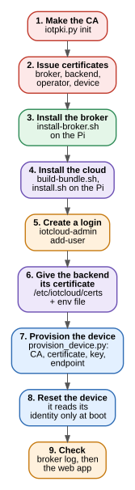
export IOTPKI_CA_PASSPHRASE=... # protects the CA key
broker/iotpki.py init # once: creates the CA
broker/iotpki.py server --san IP:192.168.0.209 --san DNS:envmon.lan \
--san DNS:localhost --san IP:127.0.0.1
broker/iotpki.py service iotcloud # the backend's certificate
broker/iotpki.py service ota-operator # for the OTA tool
broker/iotpki.py device 002d004f3442501020323848 # one per deviceThe --san entries are the names and addresses the broker may be reached as. The device checks that the address it connects to is in this list.
broker/build-bundle.sh && scp broker/out/broker-bundle.tar.gz luca@192.168.0.209:
# on the Pi:
tar xzf broker-bundle.tar.gz && cd broker-bundle && sudo ./install-broker.sh --replace-bench
# rollback if needed: sudo ./install-broker.sh --rollback--replace-bench removes the old bench configuration. From then on only certificates from the new CA work: the Gateway and every script that
connected to that broker need new certificates. Do it when nothing else is using the Pi.cloud/web/build.sh # builds the web app in a container
cloud/deploy/build-bundle.sh
scp cloud/deploy/out/iotcloud-bundle.tar.gz luca@192.168.0.209:
# on the Pi:
tar xzf iotcloud-bundle.tar.gz && cd iotcloud-bundle && sudo ./install.sh
sudo iotcloud-admin add-user luca --role admin # asks for a password (10+ characters)sudo install -o root -g iotcloud -m 0640 ca.crt iotcloud.crt iotcloud.key /etc/iotcloud/certs/
sudo nano /etc/iotcloud/iotcloud.env # broker host/port and the three certificate paths
sudo systemctl restart iotcloud
journalctl -u iotcloud -n 20 # "connected to the broker: Success"If a certificate file is missing the service still starts (the web app and stored data work, commands answer 503) and the log names the missing file.
The Gateway's console is a serial port (460800 baud). provision_device.py types the console's prov commands for you: it converts the PEM files to the binary form the device stores, sends them in small acknowledged chunks, and checks each step.
scripts/provision_device.py --port /dev/ttyACM0 --ssid MyWifi --password '...' \
--ca ca.crt --cert 002d004f3442501020323848.crt --key 002d004f3442501020323848.key \
--endpoint 192.168.0.209
scripts/provision_device.py --port /dev/ttyACM0 --status # what is storedunknown ca or unexpected eof although everything stored is correct.sudo tail /var/log/mosquitto/mosquitto.log shows New client connected … as 002d004f3442501020323848.curl -s localhost:8000/api/healthz on the Pi returns {"ok":true}.https://envmon.lan/; the Gateway appears in the side bar within a minute (first telemetry), with a green dot.Issue a certificate with iotpki.py device <serial> (the serial is shown by the device's console), run provision_device.py for it, reset it. Nothing changes on the broker or the cloud: the access list is written in terms of "its own serial", so a new device is covered automatically, and the cloud registers it when it first hears from it.
A failed firmware update can leave a board unusable and out of reach. Three rules prevent that: (1) never write over the running image, (2) install only an image whose signature proves it comes from us, and (3) let the new image earn trust by passing a self-check, and return to the old one if it does not. Two consequences shape the file format:
0x0800_6000) and once for Slot B (bank 2, 0x0808_0000). The device uses whichever one it is not running from. Both are uploaded; the device asks for the right one.tools/ota/make_image.py genkey --private ~/keys/ota_release.pem
# writes the private key outside git and rewrites firmware_store/ota_public_key.cota_public_key.c is committed as an all-zero placeholder (not a valid point on the curve), so a fresh build can verify nothing and fails closed; a unit test insists on it. For a release you copy the real public half in, build, and git checkout the file again. build-release.sh refuses to build when the file is not the public half of the key you pass.
scripts/build-bootloader.sh /tmp/bl # once per board: /tmp/bl/bootloader.elf
scripts/build-release.sh --version 1.0.1 --private ~/keys/ota_release.pem --out ~/rel/1.0.1
# links for Slot A and Slot B, signs both, writes the Slot-A descriptor
# output: gateway_slot_a.ota gateway_slot_b.ota (+ .bin, .elf, desc_a.bin)The version lives in the signed header. Two releases with identical code but different versions (1.0.0 and 1.0.1) are a good way to test the update path itself without a code change adding its own risks.
A board that has never run from a slot cannot update itself. The first image is flashed with the programmer (openocd): the bootloader, then the Slot-A image and its descriptor. After that every update is over the air.
scripts/build-release.sh --flash-only --out ~/rel/1.0.0 --bootloader /tmp/bl/bootloader.elf
# expect on the console at boot: BL in=0 out=1 bank=A gen=1 ... ver=0x01000000 BL run 0x08006000
# and NO message "not running from a slot: OTA disabled"On this bench the boards are plugged into the Pi, so the same openocd steps were run there (programming bootloader.elf, erasing the 8 KB metadata area, programming Slot A at 0x08006000 and its descriptor at 0x08005000). The result is identical.
gateway_slot_a.ota and gateway_slot_b.ota (they appear in the image list with their SHA-256).The same from the command line (the browser does exactly this):
curl -X PUT --data-binary @gateway_slot_a.ota https://envmon.lan/api/images/a.ota # (with the session cookie)
curl -X PUT --data-binary @gateway_slot_b.ota https://envmon.lan/api/images/b.ota
curl -X POST https://envmon.lan/api/devices/002d004f3442501020323848/ota -d '{"image_a":"a.ota","image_b":"b.ota"}'
curl https://envmon.lan/api/devices/002d004f3442501020323848/ota # job stateOr without the cloud's web app, with the stand-alone operator tool (this is how the real Gateway was updated on 2026-11-09):
scripts/ota_server.py --host envmon.lan --device-id 002d004f3442501020323848 \
--cafile ~/.iot-pki/issued/ota-operator/ca.crt --cert ~/.iot-pki/issued/ota-operator/ota-operator.crt \
--key ~/.iot-pki/issued/ota-operator/ota-operator.key \
--image-a ~/rel/1.0.1/gateway_slot_a.ota --image-b ~/rel/1.0.1/gateway_slot_b.ota --job 1109 --expect successUse a new --job number each time; sending the same number again resumes an interrupted download.
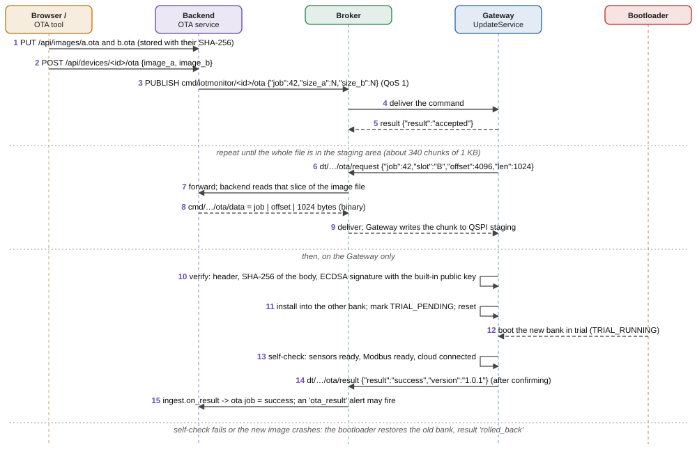
The download is slow on purpose: one 1 KB request/answer per round trip over a Wi-Fi module that is not fast. On the real Gateway it ran at about 2.3 KiB/s (about 2.5 minutes for a 338 KB image).
accepted or rejected with a reason.sig_invalid, hash_mismatch, wrong_slot, …) and changes nothing.TRIAL_PENDING) and reset.TRIAL_RUNNING and starts it.success. Fail, crash, watchdog or power loss before confirming: the bootloader restores the previous bank at the next boot, and that image reports rolled_back.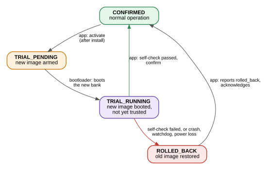
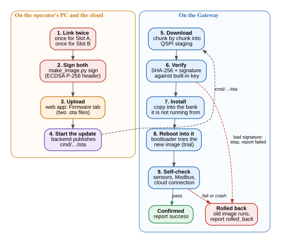
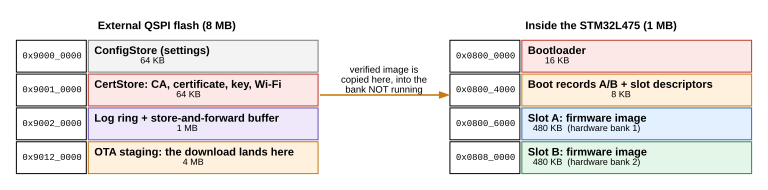
| Result / reason | Meaning | What to do |
|---|---|---|
rejected (busy, not_ota_capable, not_ready, bad_command) | The device refused to start. not_ota_capable: it is not running from a slot (flash it once with a cable, 10.4). | Fix the cause, start a new job. |
failed download_failed, stalled, start_timeout | The link dropped or the cloud stopped answering. | Check broker and Wi-Fi; send the same job again to resume. |
failed sig_invalid, hash_mismatch, bad_header, wrong_slot, too_large | The file is not one this device will accept: signed with another key, damaged, built for the wrong slot, or larger than a slot (480 KB). | Rebuild with the right key and both slots; check that the public key in the firmware matches. |
failed install_failed, activate_failed | The flash write did not verify (retried once). | Retry; if it repeats, suspect the board's flash. |
rolled_back (reason rollback) | The new image booted but failed its self-check, or crashed. The old one runs again. The reason cannot tell the two apart; the failed image's own log has the detail. | Look at the console log of the failed run; fix and release a new version. |
| no result at all | A power cut between steps can lose the report. The cloud still learns the truth from the fw_version in the next health message. | Check the version shown in the web app. |
| Step | Result |
|---|---|
| Cable flash | Bootloader + signed 1.0.0 programmed and verified; console showed BL run 0x08006000, no "OTA disabled". |
| Update 1.0.0 → 1.0.1 | Accepted; 338 chunks, 345,688 bytes in 145.8 s (2.3 KiB/s); success, version 1.0.1, 0 rollbacks. After a reset the bootloader ran bank=B gen=4 ver=0x01000001 at 0x08080000. The cloud showed firmware 1.0.1. |
| Update to a deliberately failing 1.0.2 | The trial image booted (bank=A gen=6 ver=0x01000002), its self-check failed, and the next boot was bank=B gen=7 rb=1 ver=0x01000001: back on 1.0.1. Result rolled_back, rollbacks 1. |
Both used the command-line operator tool. The cloud's own Firmware tab speaks the same messages and is covered by tests and the simulator, but has not yet been used against the real Gateway.
| Task | How |
|---|---|
| Look at the service | systemctl status iotcloud · journalctl -u iotcloud -f · curl -s localhost:8000/api/healthz |
| Users | sudo iotcloud-admin list | add-user NAME --role admin|viewer | set-password NAME | delete-user NAME (needs a real terminal for the password prompt) |
| Upgrade the cloud | Build a new bundle (cloud/deploy/build-bundle.sh), copy it, run sudo ./install.sh again. Data, users, images and settings stay. Back up the database first. |
| Back up the database | It is one file in WAL mode; copy it safely with SQLite's backup call (Python: sqlite3.connect(src).backup(dst)) or sqlite3 FILE ".backup /tmp/x". Also keep /var/lib/iotcloud/images and /etc/iotcloud. |
| Back up the keys | Copy ~/.iot-pki (CA key is encrypted) and ~/keys/ota_release.pem. Store the CA passphrase in a password manager. A dated copy was made on 2026-11-09 to /media/luca/Data/iot-backups/2026-11-09/ (same disk, other partition: copy it to a USB stick for disk failure). |
| Download data | Device page → Downloads, or /api/devices/<id>/export?kind=telemetry&format=csv (kinds: telemetry, health, alarms, events). |
| Alerts to a phone | Alerts page → add channel → Test. For ntfy: install the app, subscribe to the same server and a long random topic. |
| Try without hardware | cloud/dev/run-local.sh --sim, then open http://127.0.0.1:8000. |
| You see | Likely cause and fix |
|---|---|
Broker log: tlsv1 alert unknown ca from the device | The device does not trust the broker's CA: it still has the old CA. Provision the new CA, then reset the board. |
Broker log: unexpected eof while reading, repeating every minute | The device closed during the handshake: usually it has not reloaded its certificates. Reset it. (A certificate that does not match the endpoint name is the other cause.) |
| Web app shows "login required" / back to login | The session ended (7 days, or a password change). Sign in again. |
| Commands answer 503, no new data | The backend is not connected to the broker. journalctl -u iotcloud -n 20 names the missing or wrong certificate file or setting. |
| A device shows offline but is running | No message for 150 s. Check Wi-Fi (2.4 GHz only), the broker log, and that the endpoint stored on the device is reachable. |
| Command stays pending then timeout | The device is offline or busy. QoS 1 delivers it when the device returns; the row then updates. |
Alert log says HTTP Error 401: Unauthorized (ntfy) | The channel's token is not accepted by the server. A real ntfy access token starts with tk_; or use no token with a long random topic. |
| Restart of the backend takes 90 s | Fixed: the unit now stops open live streams after 5 s. If it returns, check the unit has --timeout-graceful-shutdown 5. |
| Firmware version in the web app briefly goes back | Fixed: an older replayed health message no longer overwrites newer information. |
OTA ends rejected / not_ota_capable | The board is not running from a slot. Flash the bootloader and a signed image with a cable once (10.4). |
| Field Device pressure looks odd | It is simulated (see chapter 4). Only the Gateway's pressure is a real measurement. |
--rollback restores it on request.| Item | State |
|---|---|
| The cloud's own OTA endpoint on the real Gateway | Tested by unit tests and the simulator; the real runs used the command-line tool. The messages are identical. |
| Device logs in the cloud | The firmware publishes no log messages today (logs leave only on the serial console). The "logs" you can download are readings, health, alarms, command and OTA results. Real device logs need a firmware feature (a decision still open). |
| Phone alerts | The channel exists and the chain is tested against a local ntfy; the configured channel on the Pi currently fails with 401 (wrong token), to be fixed. |
| RS-485 bus errors | About 0.77 % timeouts and CRC errors on the Gateway–Field Device cable during the endurance run, inside the 1 % limit; wiring and termination should be checked at the boards. |
| One update at a time, no abort | By design of the OTA protocol. |
| Rate limiting | Only logins are limited. The API is meant for a home network behind a VPN, not the open internet; nothing opens a port to the internet. |
| Memory limit on the Pi | The systemd memory cap is not enforced (kernel setting); the service uses about 60 MB. |
| Backups | One copy on the PC's second partition. A copy on another device is advisable. |
| Topic | Where |
|---|---|
| Why each design choice was made | cloud/DECISIONS.md |
| Deployment details and the first-install story | cloud/deploy/README.md |
| The CA, the access list, revocation, what was tested | broker/README.md |
| The OTA wire contract, the update state machine, the bench procedure TC-SYS-OTA-001..005 | docs/lld/application/update-service-lld.md |
| Image format, flash regions, bootloader contract | docs/lld/middleware/firmware-store.md, docs/hld/flash-partition-layout.md |
| Signing tools | tools/ota/README.md |
/etc/iotcloud/iotcloud.env)| Variable | Default / on the Pi | Meaning |
|---|---|---|
IOTCLOUD_DB | /var/lib/iotcloud/iotcloud.sqlite3 | the database file |
IOTCLOUD_IMAGE_DIR | /var/lib/iotcloud/images | uploaded firmware files |
IOTCLOUD_WEB_DIR | /opt/iotcloud/web | the built web app |
IOTCLOUD_AUTH | on | login required (off only for the localhost dev stack) |
IOTCLOUD_COOKIE_SECURE | on | cookie never sent over plain http (needed behind HTTPS) |
IOTCLOUD_MQTT_HOST / _PORT | 127.0.0.1 / 8883 | the broker (1883 for a plain local broker) |
IOTCLOUD_MQTT_CA, _CERT, _KEY | /etc/iotcloud/certs/… | the backend's identity for mutual TLS: all three or none |
IOTCLOUD_TOPIC_ROOT | iotmonitor | first part of every topic |
IOTCLOUD_ONLINE_WINDOW_S | 150 | a device is online while its last message is younger than this |
IOTCLOUD_COMMAND_TIMEOUT_S | 60 | after this a pending command shows as timeout |
/api; a signed-in user for reads, an admin for changes)| Endpoint | What it does |
|---|---|
POST /auth/login, /auth/logout, GET /auth/me | session handling (login and healthz are open) |
GET /healthz | is the service alive |
GET /devices, /devices/{id} | list, and one device with latest values, health, active alarms, online flag |
GET /devices/{id}/telemetry | health | alarms | events | history; query since, until, limit |
GET /devices/{id}/export?kind=…&format=csv|json | download (kinds: telemetry, health, alarms, events) |
POST /devices/{id}/config, /control | send a command (returns 202 and the command row) |
GET /devices/{id}/commands, /commands/{id} | commands and their status |
GET /images, PUT /images/{name}, DELETE /images/{name} | firmware store |
POST /devices/{id}/ota, GET /devices/{id}/ota, GET /ota/{job}, POST /ota/{job}/cancel | start, follow and cancel an update |
GET/POST /notify/channels, PUT/DELETE …/{id}, POST …/{id}/test, GET /notify/events, /notify/log | alert channels and their log |
GET /stream | live events (server-sent events) |
cloud/cloud/
README.md DECISIONS.md
backend/iotcloud/ __init__ admin api auth commands config db ingest live mqtt notify ota
backend/tests/ conftest test_api test_auth test_commands_ota test_ingest test_notify
web/ build.sh package.json vite.config.js index.html
web/src/ App Login Alerts DeviceView (.svelte) app.css main.js
web/src/lib/ api.js live.svelte.js auth.svelte.js Chart.svelte
web/src/tabs/ Overview Charts Alarms Commands Firmware Downloads (.svelte)
sim/ device_sim.py
dev/ run-local.sh test-alerts.sh mosquitto-dev.conf
deploy/ build-bundle.sh install.sh test-install.sh iotcloud.service Caddyfile
iotcloud.env.example requirements.lock README.md
doc/ this guide: Cloud-Guide.pdf and src/ (the scripts that rebuild it)cloud/doc/src/build.sh # draws the diagrams (Graphviz) and prints guide.html to Cloud-Guide.pdf (headless Chrome)